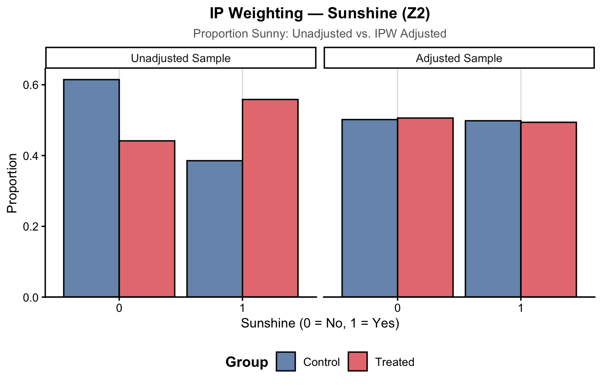

Entropy Balancing and Inverse Probability Weighting
Entropy Balancing
IP Weighting
Author
Ryan Batten
Published
March 30, 2027
Paralysis by Analysis: Causal Methods
Causal inference using real-world data can be quite useful, however we need to account for confounding. Unfortunately, we can’t use randomization however there is a large number of methods we can choose from to adjust for confounding. Propensity score matching (note: a variety of matching methods are available), inverse probability weighting, outcome regression, targeted machine learning estimation, augmented inverse probability weighting, doubly robust methods….the list goes on and on.
A common question becomes how do we choose between methods? This post will try to answer that for two different methods, specifically:
Entropy Balancing
Inverse Probability Weighting
Weight a Minute
Before we dive into these methods, we need to lay some groundwork for what each are, and how they work.
Inverse Probability Weighting
Inverse probability weighting is a useful tool for causal inference. To use this, we first have to estimate the propensity score, which is the probability of treatment given covariates (Rosenbaum and Rubin 1983). Next, we take the propensity score and put in in the denominator as:
\[
1/PS
\]
where PS is the propensity score.
Inverse probability weighting can be used to estimate four different types of causal estimands: the average treatment effect (ATE), the average treatment effect in the treated (ATT), the average treatment effect in the untreated (ATU) and the average treatment effect in the overlap (ATO) (Greifer and Stuart 2021,).
Entropy Balancing
Entropy balancing works by balancing the groups directly using equations. I realize that definition isn’t super helpful, so let’s try again. What exactly is entropy? Glad you asked!
If you’re thinking entropy from physics (like I first did), you’re on the right track! Entropy has to do with chaos, but in statistics it’s about the “chaos” from a probability distribution. When we describe a probability distribution, we can use different moments.
Moments in Time
If this sounds like it’s starting to get complicated, don’t worry! Moments sounds tricky, but they aren’t all that scary. Think of a continuous variable from a normal (Gaussian) distribution. The first moment is the mean. The second moment is the variance. Third is skewness. Fourth is kurtosis (how much of a “peak” ) there is. That’s really all you need to know for this post!
So why does this matter for entropy balancing? Because you use these moments when deciding what needs to be balanced. For example, you could say balance on just the mean. Or balance on the mean and variance. Basically any combination of the moments. This is a double-edged sword, which we’ll get to later.
Causal Question
Before any good analysis, we need to first define our causal question. For this example, we are going to ask ourselves does coffee cause happiness? Specifically, in monsters. We have two confounders: sleep and whether it is sunny outside or not.
Code
library(tidyverse)
── Attaching core tidyverse packages ──────────────────────── tidyverse 2.0.0 ──
✔ dplyr 1.2.0 ✔ readr 2.2.0
✔ forcats 1.0.1 ✔ stringr 1.6.0
✔ ggplot2 4.0.2 ✔ tibble 3.3.1
✔ lubridate 1.9.5 ✔ tidyr 1.3.2
✔ purrr 1.2.1
── Conflicts ────────────────────────────────────────── tidyverse_conflicts() ──
✖ dplyr::filter() masks stats::filter()
✖ dplyr::lag() masks stats::lag()
ℹ Use the conflicted package (<http://conflicted.r-lib.org/>) to force all conflicts to become errors
Code
library(ggdag)
Attaching package: 'ggdag'
The following object is masked from 'package:stats':
filter
Alright, so we have our question. Now to compare methods, there are a few ways we can do this. For this post, we are going to compare the two methods, specifically for:
Balance
For balance, we are going to use both standardized mean differences and plots. Specifically, plots of the distribution propensity score and both confounders (pre-/post-weighting).
Bias
For bias we will estimate using the formula from Morris, White, and Crowther (2019). I won’t bore you with the formulas here, but that’s where they are coming from.
Effective sample size
Effective sample size (ESS) is the number of individuals you would need to get the same level of precision without using weights. For example, if you’re sample size is 100 before weighting but an ESS of 50, this means you would need 50 people to get the same level of precision (i.e., less precision after weighting).
Enter the Simulation
Alright, so let’s start with bias. Before we begin, we need to set some ground rules for our simulation:
Going to run it 1000 times (chosen due to run time/don’t want our laptops to implode)
Sample size of 250 (arbitrary)
Two measured confounders (one continuous, one binary)
Binary treatment
Continuous outcome (happiness)
Target estimand will be the average treatment effect (ATE)
Methods we’ll explore:
Inverse probability weighting, with stabilized weights
Entropy balancing
Note: we will not be using doubly robust methods here.
Code
# Title: Setup # Description: This code is the setup for what we will be using later. It includes# the libraries and any functions that we may need. library(tidyverse) # ol' faithful (previously loaded earlier)library(WeightIt) # for IP weightinglibrary(cobalt) # for checking balance # z1 - sleep# z2 - sunshine# x - coffee # y - happiness #... Functions ----# We will use this function to simulate data sim_data <-function(n =250, # sample size beta_trt =1.5, # treatment effect# Parameters for Z1 z1_mean =5, z1_sd =1, # Parameters for Z2z2_size =1, z2_prob =0.5, # Confounder - Effect on Xz1_on_x =0.05, z2_on_x =0.5,# Confounder - Effect on Yz1_on_y =0.5, z2_on_y =0.7){ df <-data.frame(z1 =rnorm(n = n, mean = z1_mean, sd = z1_sd),z2 =rbinom(n = n, size = z2_size, prob = z2_prob) ) %>% dplyr::mutate(beta_trt =1.5, prob =plogis(z1_on_x * z1 + z2_on_x * z2), x =rbinom(n = n, size =1, prob = prob), y = beta_trt * x + z1_on_y * z1 + z2_on_y * z2 +rnorm(n = n, mean =0, sd =1) )return(df)}
Apply Each Method
Code
scenario1 <-sim_data()ebal <- WeightIt::weightit( x ~ z1 + z2,data = scenario1,method ="ebal",moments =c(z1 =2, z2 =1), # two moments for z1, one for z2estimand ="ATE")ipw <- WeightIt::weightit( x ~ z1 + z2,data = scenario1,method ="glm",stabilize =TRUE,estimand ="ATE")
Balance
Let’s start with balance. How does balance look from both methods?
Scale for fill is already present.
Adding another scale for fill, which will replace the existing scale.
Warning: No shared levels found between `names(values)` of the manual scale and the
data's colour values.

Scenario 2 - Unequal SDs
Code
sim_data2 <-function(n =250,beta_trt =1.5,z1_mean =5,z1_sd_control =1, # SD for z1 in control groupz1_sd_treatment =3, # SD for z1 in treatment group (substantially larger)z2_size =1, z2_prob =0.5,z1_on_x =0.05, z2_on_x =0.5,z1_on_y =0.5, z2_on_y =0.7){ df <-data.frame(z1_raw =rnorm(n = n, mean = z1_mean, sd =1), # standardised z1 for treatment assignmentz2 =rbinom(n = n, size = z2_size, prob = z2_prob) ) %>% dplyr::mutate(beta_trt = beta_trt,# z1_raw drives treatment probability (confounding preserved)prob =plogis(z1_on_x * z1_raw + z2_on_x * z2),x =rbinom(n = n, size =1, prob = prob),# Rescale z1 within each group to have the desired group-specific SDz1 =ifelse( x ==1, z1_mean + (z1_raw - z1_mean) * z1_sd_treatment, # stretch for treatment z1_mean + (z1_raw - z1_mean) * z1_sd_control # compress/keep for control ),y = beta_trt * x + z1_on_y * z1 + z2_on_y * z2 +rnorm(n = n, mean =0, sd =1) ) %>% dplyr::select(-z1_raw)return(df)}
References
Greifer, Noah, and Elizabeth A Stuart. 2021. “Choosing the Causal Estimand for Propensity Score Analysis of Observational Studies.”arXiv Preprint arXiv:2106.10577.
Morris, Tim P, Ian R White, and Michael J Crowther. 2019. “Using Simulation Studies to Evaluate Statistical Methods.”Statistics in Medicine 38 (11): 2074–2102.
Rosenbaum, Paul R, and Donald B Rubin. 1983. “The Central Role of the Propensity Score in Observational Studies for Causal Effects.”Biometrika 70 (1): 41–55.